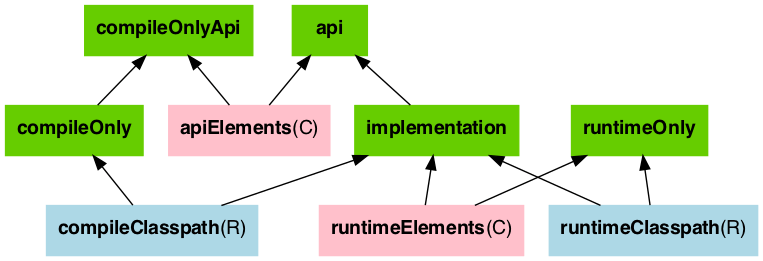
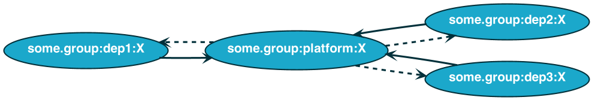

SLF4J: Class path contains multiple SLF4J providers.
SLF4J: Found provider [ch.qos.logback.classic.spi.LogbackServiceProvider@27eedb64]
SLF4J: Found provider [org.slf4j.simple.SimpleServiceProvider@64c63c79]
SLF4J: See https://www.slf4j.org/codes.html#multiple_bindings for an explanation.
SLF4J: Actual provider is of type [ch.qos.logback.classic.spi.LogbackServiceProvider@27eedb64]Dependency Management? Mode️l it!
Louis Jacomet
JFokus 2023
What are we talking about today?
📋
A few questions …
Who uses third party dependencies?
How many? 100s? 10s?
Who has fought with getting the right dependencies or versions in their application?
Who has seen the following at runtime?
Who uses Gradle?
Who uses Maven?
Who uses both?
Agenda
Declaring dependencies
Version conflict
Downgrading a version
Alignment of versions
Implementation conflict
The logging use case
The Jakarta use case
Who am I?
🧑💻

speaker {
name = "Louis Jacomet"
company = "Gradle"
joined = 2018
position = "Support Team Lead"
previously = "Dependency Management, JVM"
past = listOf(
"Terracotta / Ehcache" in 2013,
"Devoxx Belgium Committee" since 2012,
"Contractor" in 2002,
"Java 'Hello, World!'" in 1997
)
failures = generateSequence(code) { bugs }
twitter = "@ljacomet"
mastodon = "@ljacomet@foojay.social"
github = "ljacomet"
extra = "Not fully figured out how to stay out of management !?!"
}Gradle
Since 2008, our mission is to improve developer productivity.
Software build tool under Apache license.
Top 20 in popular open source projects according to TechCrunch with nearly 30 millions monthly downloads.
Gradle Enterprise, commercial solution, is the first integrated platform for Developer Productivity Engineering (DPE)

Developer Productivity Engineering
Developer Productivity Engineering (DPE) is a software development practice used by leading software development organizations to maximize developer productivity and happiness.
|

Build Scans
Permanent record
of everything that happens in a build.


Declaring dependencies
🐘
Dependency declarations
dependencies {
api("com.google.code.gson:gson:2.10.1")
implementation("org.slf4j:slf4j-api:1.7.36")
}
testing {
suites {
val test by getting(JvmTestSuite::class) {
dependencies {
implementation("org.assertj:assertj-core:3.21.0")
}
}
}
}API / Implementation separation
Choosing a scope for the declaration
api,implementation,compileOnly,runtimeOnly, …
Influences resolution used by tasks
Influences exposition to consumers
Java library configurations

"of each dependency, give me the variant required for compilation"
"of each dependency, give me the variant required to run the application"
Dependency constraints
Influences resolution, iff the dependency is present in the graph
dependencies {
constraints {
implementation("com.google.inject:guice") {
version {
strictly("[4.0, 5.0[")
// require("[4.0, 5.0[")
prefer("4.2.0")
reject("4.2.1")
// rejectAll()
}
because("Only version 4 of Guice has all DI features we need.")
}
}
}Constraint use cases
Central version declaration
Some overlap with dependency catalogs
Influence versions of transitives
Express an opinion
Without adding the dependency to the graph
Platforms
Models a component that provides dependency constraints
plugins {
`java-platform`
}
dependencies {
constraints {
api("commons-httpclient:commons-httpclient:3.1")
runtime("org.postgresql:postgresql:42.2.5")
}
}Combining platforms
javaPlatform {
allowDependencies()
}
dependencies {
api(platform("org.springframework.boot:spring-boot-dependencies:2.7.8"))
}Includes Spring Boot platform constraints
Keeping it under control
Tooling for validating dependency declarations
Check out the dependency analysis plugin
❌ on violations
Advice for <project>
Unused dependencies which should be removed:
<declaration>
Transitively used dependencies that should be declared directly as indicated:
<declaration>
Existing dependencies which should be modified to be as indicated:
api("...") (was implementation)
Dependencies which should be removed or changed to runtime-only:
runtimeOnly("...") (was implementation)Dealing with version conflict
⚔
What is a version conflict?
Multiple paths to dependency
Disagree on version
Optimistic upgrade strategy
Highest version that satisfies all
Some examples
1.0.0and1.0.5⇒1.0.51.0.0and2.0.0⇒2.0.0[1.0, 2.0[and1.5⇒1.51.5and[2.0, 3.0[⇒ latest2.xavailable[1.0, 2.0[and[3.0, 4.0[⇒ latest3.xavailable
Understanding why a version was selected
Dependency insight report
Variant selection information
Selection reasons
All paths to a dependency
And what about downgrading?
Use
strictlyOverrules versions lower in graph
Is published
Visible for consumers
dependencies {
implementation("org.guava:guava") {
version {
strictly("19")
}
}
implememation("org.eclipse.collections:eclipse-collections:10.4.0!!")
}Grokking downgrading
Impact on consumer
Cross module version conflict
What is the common point between the following libraries?
com.fasterxml.jackson*org.springframework:spring-*org.springframework.boot:spring-boot-*and many others
Dependencies group
Set of dependencies sharing a version
Designed to work when using a single version.
In short, you want alignment of versions across dependencies.
Aligning dependencies
Group of dependencies to align
Platform listing them
Upgrade of one triggers upgrade of all
Alignment with published platform
Dependencies of the group depend on the platform

Demo
Dealing with implementation conflict
🛠
Logging use case
SLF4J: Class path contains multiple SLF4J providers.
SLF4J: Found provider [ch.qos.logback.classic.spi.LogbackServiceProvider@27eedb64]
SLF4J: Found provider [org.slf4j.simple.SimpleServiceProvider@64c63c79]
SLF4J: See https://www.slf4j.org/codes.html#multiple_bindings for an explanation.
SLF4J: Actual provider is of type [ch.qos.logback.classic.spi.LogbackServiceProvider@27eedb64]Many options …
… broken combinations

Introducing capabilities
Software components can provide multiple capabilities
A capability can be provided by a single module in a dependency graph
Future
"I need a logger implementation" instead of "I need
slf4j-simple"
What is a capability?
Capability similar to dependency coordinate:
A group identifier,
A module name,
A version
Implicit capability
Matching its module coordinates
Resolving capability conflicts
Multiple capability conflict resolutions strategies
Select highest version
Select a specific implementation
Configured per capability
Demo
Java EE and Jakarta EE
Migration of the EE specifications from Oracle to Jakarta (Eclipse)
Weird decision for dependency management
Jakarta EE 8 is fully compatible with Java EE 8
But modules have different coordinates
Jakarta EE 9 re-uses the same GAV
But the package change makes them fully incompatible with Jakarta EE 8 (and Java EE 8)
EE 8 conflict
Jakarta EE 8 and Java EE 8
Different coordinates, same code
Perfect use case for capabilities
- Recommendation
Add the capabilities, using this plugin. And resolve conflicts by using the Java EE 8 version
Jakarta EE 8 & 9 conflict
Jakarta EE 8 usage cannot be upgraded to Jakarta EE 9
Same dependency coordinates
Different package:
javaxvs.jakartaVersion conflict resolution will happily upgrade to highest version
- Recommendation
Substitute all Jakarta EE 8 modules with Java EE 8 ones. Reject all Jakarta EE 8 versions for the Jakarta EE modules.
More use cases for capabilities
Multiple implementations
ASM coordinates change
cglibvs.cglib-nodepAnd many more, regrouped in the
java-ecosystem-capabilitiesplugin
Modelling of "optional dependencies"
Thank you!
❓